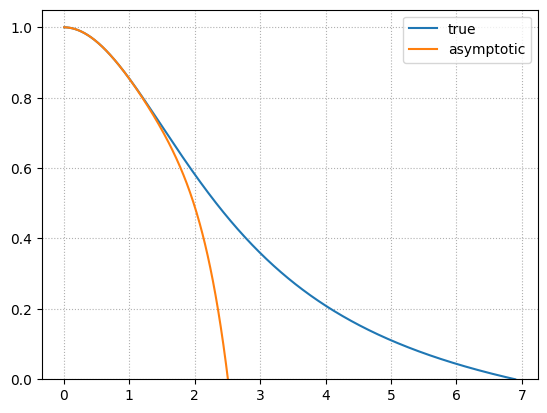
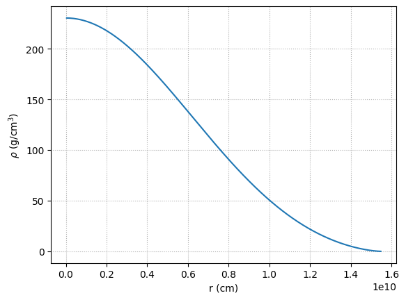
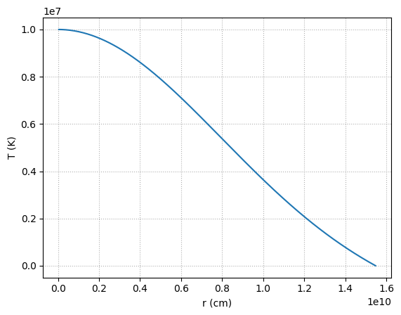

Homework 6 solutions#
import unyt
import matplotlib.pyplot as plt
import numpy as np
We’ll need our Lane-Emden solver, so we’ll paste it here:
class Polytrope:
"""a polytrope of index n"""
def __init__(self, n, h0=1.e-2, tol=1.e-12):
self.n = n
self.xi = []
self.theta = []
self.dtheta_dxi = []
self._integrate(h0, tol)
def _integrate(self, h0, tol):
"""integrate the Lane-Emden system"""
# our solution vector q = (y, z)
q = np.zeros(2, dtype=np.float64)
xi = 0.0
h = h0
# initial conditions
q[0] = 1.0
q[1] = 0.0
while h > tol:
# 4th order RK integration -- first find the slopes
k1 = self._rhs(xi, q)
k2 = self._rhs(xi+0.5*h, q+0.5*h*k1)
k3 = self._rhs(xi+0.5*h, q+0.5*h*k2)
k4 = self._rhs(xi+h, q+h*k3)
# now update the solution to the new xi
q += (h/6.0)*(k1 + 2*k2 + 2*k3 + k4)
xi += h
# set the new stepsize--our systems is always convex
# (theta'' < 0), so the intersection of theta' with the
# x-axis will always be a conservative estimate of the
# radius of the star. Make sure that the stepsize does
# not take us past that.
R_est = xi - q[0]/q[1]
if xi + h > R_est:
h = -q[0]/q[1]
# store the solution:
self.xi.append(xi)
self.theta.append(q[0])
self.dtheta_dxi.append(q[1])
self.xi = np.array(self.xi)
self.theta = np.array(self.theta)
self.dtheta_dxi = np.array(self.dtheta_dxi)
def _rhs(self, xi, q):
""" the righthand side of the LE system, q' = f"""
f = np.zeros_like(q)
# y' = z
f[0] = q[1]
# for z', we need to use the expansion if we are at xi = 0,
# to avoid dividing by 0
if xi == 0.0:
f[1] = (2.0/3.0) - q[0]**self.n
else:
f[1] = -2.0*q[1]/xi - q[0]**self.n
return f
def get_params(self):
""" return the standard polytrope parameters xi_1,
and [-xi**2 theta']_{xi_1} """
xi1 = self.xi[-1]
p2 = -xi1**2 * self.dtheta_dxi[-1]
return xi1, p2
def plot(self):
""" plot the solution """
fig = plt.figure()
ax = fig.add_subplot(111)
ax.plot(self.xi, self.theta, label=r"$\theta$")
ax.plot(self.xi, self.theta**self.n, label=r"$\rho/\rho_c$")
ax.set_xlabel(r"$\xi$")
ax.legend(frameon=False)
return fig
1. Lane-Emden asymptotics#
The Lane-Emden equation is:
we want a series expansion near \(\xi = 0\).
Our boundary conditions are \(\theta(0) = 1\) and \(\theta(\xi) = \theta(-\xi)\).
Let’s write
The our boundary conditions imply:
\(\theta(0) = 1 \rightarrow a_0 =1\)
\(\theta(\xi) = \theta(-\xi) \rightarrow\) all odd coefficients are \(0\)
This leaves us with
Now let’s compute the derivatives:
and then for the second derivative:
and finally:
Now consider the righthand side:
using a binomial expansion, we can write this as:
we can write the \(\left ( \ldots \right )^2\) term out as:
Then putting it all together (keeping terms to \(\mathcal{O}(\xi^4)\), we have:
Grouping by power, we have:
This has the solution:
giving:
Let’s see how well this does compared to the integrated solution
p = Polytrope(3)
def theta_approx(xi, n=3):
return 1 - (1./6.) * xi**2 + (n / 120.) * xi**4 - n * (8 * n - 5) / 15120. * xi**6
fig, ax = plt.subplots()
ax.plot(p.xi, p.theta, label="true")
ax.plot(p.xi, theta_approx(p.xi, n=p.n), label="asymptotic")
ax.set_ylim(0, 1.05)
ax.grid(ls=":")
ax.legend()
<matplotlib.legend.Legend at 0x7f716ea19160>

2. Stellar stability#
We want to understand how a star responds when we perturb it. We are going to use homologous compression, assuming that each radial shell moves by the same factor:
a. density response#
The initial mass of a shell is
and after perturbing, it becomes:
Since the mass in the shell is unchanged by compression, this shows that
b. pressure response#
Now we can use HSE to find the pressure response. For some mass-shell \(m_\mathrm{sh}\) in the star, we can integrate to the surface (where \(m = M\)):
when we perturb the radial coordinate, the mass doesn’t change, so the perturbed pressure is:
c. adiabaticity#
If this compression is done adiabatically, then:
so the gas pressure responds under compression as:
d. stability#
To be stable, we require
or
Therefore, stability requires:
or \(\Gamma_1 > 4/3\)
3. Fully convective stars#
We want to consider the structure of a \(0.3~M_\odot\) fully convective star. We know that \(\gamma = 5/3\) (corresponding to a polytropic index \(n = 3/2\)), and we are told to take \(\mu = 0.6\).
We’ll need our Lane-Emden soluition, which I’ll copy from our notes here:
a. central density#
From the ideal gas law and the polytropic equation of state, we have:
taking \(n = 3/2\), we have:
b. polytropic constant#
From polytropes (taking \(n = 3/2\)), we know:
where \(M_{3/2} = -\xi_1^2 d\theta/d\xi |_{\xi_1}\) is computed from the polytrope solutions.
Inserting our central density, we have:
or solving for \(K\):
Now we can put in some numbers. We are assuming a central temperature of \(T_c = 10^7~\mathrm{K}\).
k = unyt.kb_cgs
G = unyt.G_cgs
M = 0.3 * unyt.solar_mass_cgs
T = 1.e7 * unyt.K
mu = 0.6
m_u = (1.0 * unyt.atomic_mass_unit).in_cgs()
p = Polytrope(1.5)
xi1_32, M_32 = p.get_params()
K = (np.sqrt(4*np.pi) * (2 * G / 5)**1.5 * (M / M_32) * (mu * m_u / (k * T))**0.75)**(4./3.)
K.in_cgs()
unyt_quantity(3.68728078e+13, 'cm**4/(g**(2/3)*s**2)')
c. Plotting#
To plot things in physical units, we need to know the central density, which we can now compute
rho_c = (k * T / (mu * m_u * K))**1.5
rho_c.in_cgs()
unyt_quantity(230.39075645, 'g/cm**3')
n = 1.5
P_c = K * rho_c**(1 + 1/n)
P_c
unyt_quantity(3.19262537e+17, 'g/(cm*s**2)')
We also need the \(\alpha\) scaling to convert the dimensionless radius into physical radius,
alpha = np.sqrt(((n + 1) * P_c) / (4 * np.pi * G * rho_c**2))
alpha
unyt_quantity(4.23426757e+09, 'cm')
The the radius of the star is
R = alpha * xi1_32
R
unyt_quantity(1.54709709e+10, 'cm')
We previously looked at a \(0.3~M_\odot\) star with MESA. Let’s see how this compares (we’ll use the model from the main sequence).
import mesa_reader as mr
profile = mr.MesaData("M0.3_default_profile8.data")
rho_c_mesa = 10**profile.logRho[-1]
rho_c_mesa
np.float64(154.51865875668517)
P_c_mesa = profile.pressure[-1]
P_c_mesa
np.float64(1.3929629957845242e+17)
K_mesa = P_c_mesa / rho_c_mesa**(1 + 1/n)
K_mesa /1.e13
np.float64(3.1306753222508052)
R_mesa = profile.radius[0] * unyt.solar_radius
R_mesa.in_cgs()
unyt_quantity(2.21212542e+10, 'cm')
So we are pretty close.
Now we can plot the density. First get the dimenionless solution from the Lane-Emden equation
xi = p.xi
theta = p.theta
r_poly = alpha * xi
rho_poly = rho_c * theta**n
fig, ax = plt.subplots()
ax.plot(r_poly, rho_poly)
ax.set_xlabel("r (cm)")
ax.set_ylabel(r"$\rho$ (g/cm$^3$)")
ax.grid(ls=":")

We can get temperature from the ideal gas law:
T_poly = mu * m_u * K * rho_poly**(1/n) / k
fig, ax = plt.subplots()
ax.plot(r_poly, T_poly)
ax.set_xlabel("r (cm)")
ax.set_ylabel("T (K)")
ax.grid(ls=":")

d. luminosity#
For the luminosity, we can just to a simple Riemann sum. We’ll just take X = 1
X = 1
L = 0
for n in range(len(r_poly)-1):
T9 = T_poly[n] / (1.e9 * unyt.K)
rho = rho_poly[n]
r = r_poly[n]
dr = r_poly[n+1] - r_poly[n]
# the rho and T9 in the eps expression should be dimensionless, and then we'll
# attach the proper units
eps_pp = 2.4e4 * float(rho) * X**2 * T9**(-2./3.) * np.exp(-3.38 * T9**(-1./3.)) * unyt.erg / unyt.g / unyt.s
L += 4 * np.pi * r**2 * rho * eps_pp * dr
L / (1 *unyt.solar_luminosity).in_cgs()
unyt_quantity(0.30268346, '(dimensionless)')
We see that the luminosity is about \(0.3~L_\odot\)